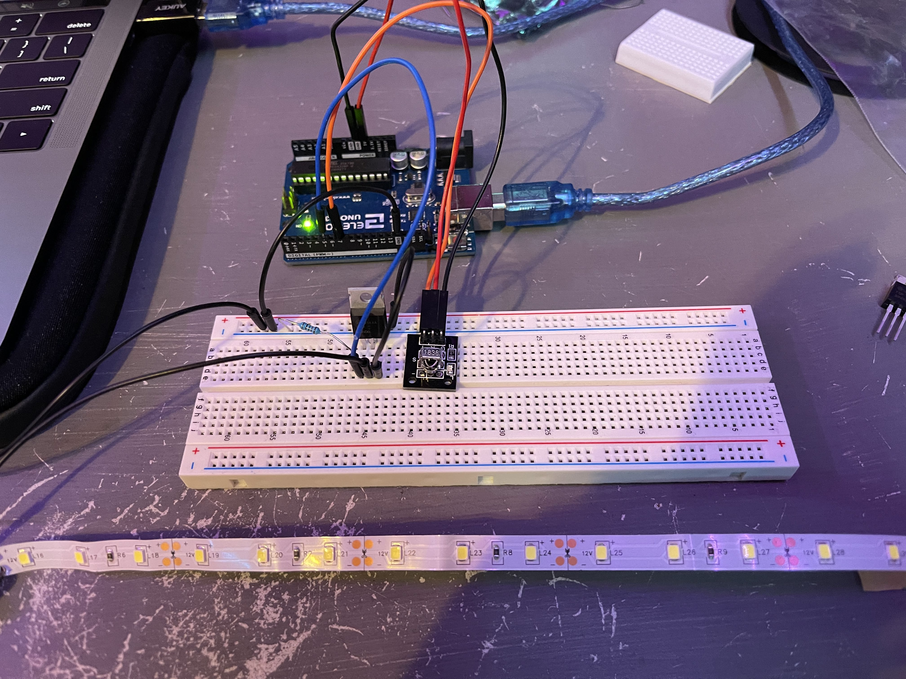
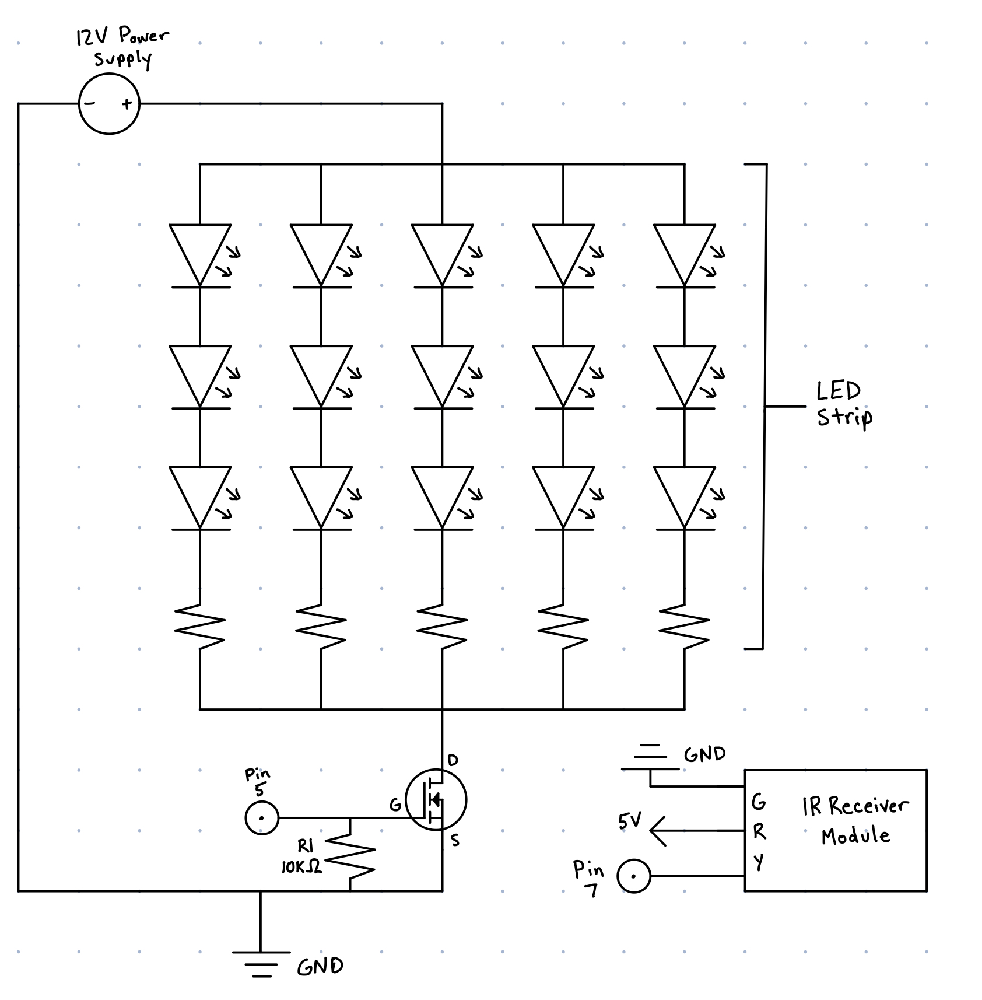
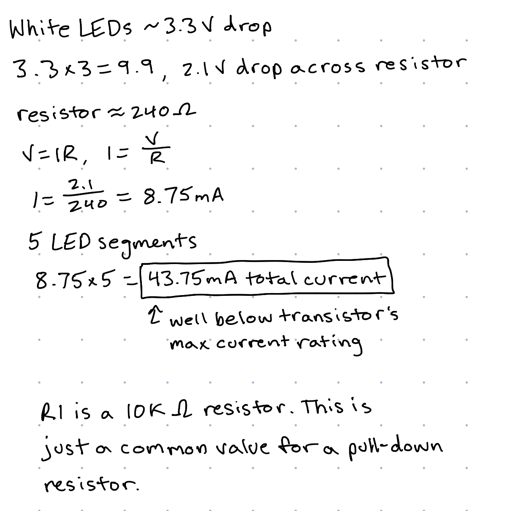

Michael Wentworth's Assignment 5!

Circuit for Assignment 5

Above circuit in action. The LED light strip turns on or off when the power button is pressed on the remote. Using the up and down arrow buttons adjusts the brightness of the LEDs.

Schematic for the above circuit. The larger schematic is for the LED strips and MOSFET transistor components. The transistor's resistance is controlled through pin 5 on the Arduino, and the circuit is powered by an external 12V power supply. The smaller schematic is for the Infrared Receiver Module, which allows the remote control to communicate with the Arduino to control the voltage to the transistor.

Calculations of interest for the circuit.
#include <IRremote.h> // Library for using IR Sensor/Remote
// IRremote Code was taken from the tutorial linked in lecture, so much of this code
// was provided there, and I am not 100% sure what some of it does exactly, but I will
// try my best to describe what is happening.
const int RECV_PIN = 7; // Input pin for IR Sensor
const int MOSFET_PIN = 5; // Output pin for MOSFET Transistor Gate
int BRIGHTNESS = 255; // Analog value for brightness of LED Strip, initializes to 255
int ON_OFF = 0; // LED Power, 0 = Off, 1 = On
IRrecv irrecv(RECV_PIN); // Sets IR Receiver object to receive from RECV_PIN
decode_results results; // Decodes input from IR Sensor
unsigned long key_value = 0;
void setup(){
pinMode(MOSFET_PIN, OUTPUT);
irrecv.enableIRIn();
irrecv.blink13(true);
}
void loop(){
if (irrecv.decode(&results)){ // If receives results
if (results.value == 0XFFFFFFFF) // Code for if button is held
results.value = key_value; // sets result to last input
switch(results.value){
case 0xFFA25D: // code for power button being pressed
if (ON_OFF == 0) { // if LEDs are off
ON_OFF = 1; // set ON_OFF to on
analogWrite(MOSFET_PIN, BRIGHTNESS); // Turn on LEDs to current brightness
} else { // if LEDs are off
ON_OFF = 0; // set ON_OFF to off
analogWrite(MOSFET_PIN, 0); // turn off LEDs
}
delay(100); // waits 100 ms
break; // Move to next case
case 0xFFE01F: // Code for down button being pressed
if (BRIGHTNESS > 5 && ON_OFF == 1) { // If brightness greater than 5 and LEDs on
BRIGHTNESS -= 10; // decrease brightness by 10
analogWrite(MOSFET_PIN, BRIGHTNESS); // set LEDs to new value
}
break; // Move to next case
case 0xFF906F: // Case for up button being pressed
if (BRIGHTNESS < 255 && ON_OFF == 1) { // If brightness less than 255 and LEDs on
BRIGHTNESS += 10; // increase brightness by 10
analogWrite(MOSFET_PIN, BRIGHTNESS); // set LEDs to new value
}
break ; // done testing cases
}
key_value = results.value; // sets key_value to current button pressed
irrecv.resume();
}
}
Code for the Arduino Circuit. Input is constantly collected from the IR sensor and remote and translated into instructions for the Arduino. Important variables are ON_OFF, which states whether the LEDs should be on or off and BRIGHTNESS which is a value between 5 and 255 which determines the brightness of the LED lights.